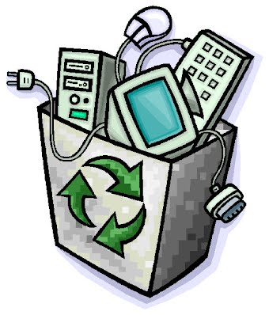

Environmental Effects
Advantages
- Use of Paper: The demand for paper records and the files to hold them is reduced when the firm keeps its files as electronic records. Another way to cut down on paper usage is to read newspapers and periodicals online or as downloadable documents.
- Consumption of Fossil Fuels: Virtual meetings, Web conferences, and webcasts have become popular alternatives to some or perhaps all business travel. Holding virtual meetings reduces the need for fossil fuels and saves time and money that would otherwise be spent on travel, hotels, and flights.
What are the risks?
- Production: Pollution is produced during computer manufacturing. A significant amount of fossil fuels and chemicals are needed to produce computers. People who live close to manufacturing facilities that release hazardous chemicals and pollutants into the air are at risk of health problems because of the pollution caused by the creation of computers.
- Landfill Waste: Millions of tonnes of garbage in abandoned computers are produced annually because of evolving technology and computer failures. When computers are disposed of in landfills, hazardous compounds, and heavy metals like lead damage the groundwater and the environment. People may be exposed to harmful chemicals while drinking and floating in water that has been contaminated by this waste runoff.
